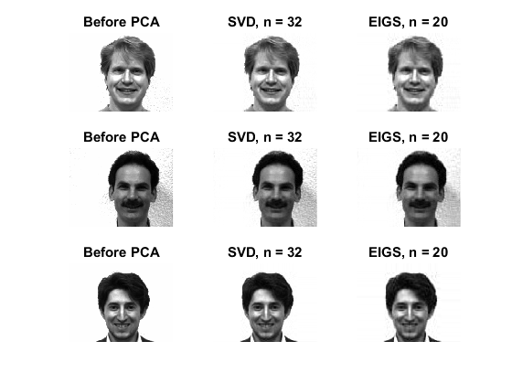
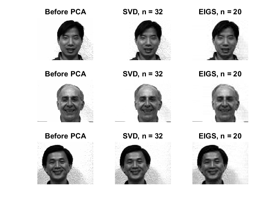
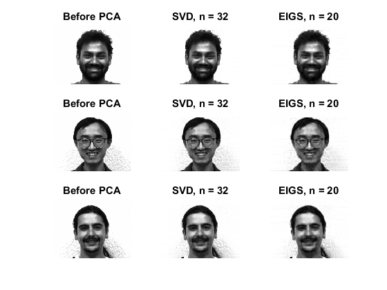
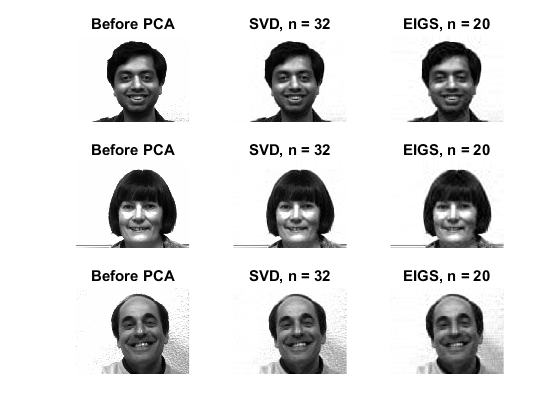
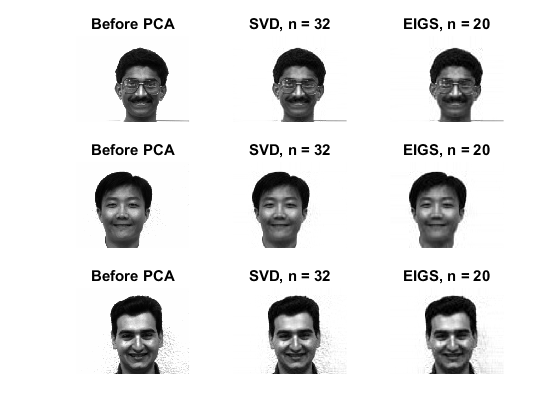

Example 01 Using PCA in Demension Reduction of facial image
- used 20 eigvalues of each image
- maxinum error ratio less than 2.7%(n = 20), 2.0%(n = 32)
- maxinum absolute error may above 100 grayscale(8-bits gray image, n = 20)
Contents
READ DATA
if (exist('image_set.mat', 'file') ~= 2)
files = dir('*.happy.gif');
n = length(files);
info = imfinfo(files(1).name, 'gif');
im_map = info.ColorTable;
im_w = int32(info.Width);
im_h = int32(info.Height);
im_set = zeros(n, im_h, im_w, 'uint8');
for id = 1 : n
im_set(id, :, :) = imread(files(id).name, 'gif');
end
save('image_set.mat', 'im_set', 'im_map');
else
load('image_set.mat');
end
[n, im_h, im_w] = size(im_set);
im_map_length = size(im_map', 2);
x = zeros(im_h, im_w);
y = zeros(im_h, im_w);
Create Picture with First 32 Singular Values
Using SVD
im_svd_set = zeros(n, im_h, im_w, 'uint8');
fprintf('ERROR Summary: Using svd method\n');
name_prefix = 'subject';
name_suffix = '.happy.svd.gif';
for id = 1 : n
im = reshape(im_set(id, :, :), im_h, im_w);
x = double(im);
[W, R, D, mu] = pca_svd(x, 32, '-exact -all');
y = bsxfun(@plus, R * W', mu);
gtcmap = find(y >= im_map_length);
ltcmap = find(y < 0);
if (~isempty(gtcmap) || ~isempty(ltcmap))
y(gtcmap) = im_map_length - 1;
y(ltcmap) = 0;
end
err = abs(x(:) - y(:)); y = uint8(y);
err_max = max(err);
err_avg = mean(err);
err_ratio = err_avg / double(im_map_length);
fprintf('sample %02d: maximum error: %3.0f, ', id, err_max);
fprintf('average error: %4.2f, ', err_avg);
fprintf('error ratio: %4.2f%%.\n', err_ratio * 100);
im_svd_set(id, :, :) = y;
imwrite(y, im_map, sprintf('%s%02d%s', name_prefix, id, name_suffix));
end
save('image_svd_set.mat', 'im_svd_set');
ERROR Summary: Using svd method
sample 01: maximum error: 66, average error: 2.28, error ratio: 0.89%.
sample 02: maximum error: 78, average error: 3.03, error ratio: 1.18%.
sample 03: maximum error: 48, average error: 1.69, error ratio: 0.66%.
sample 04: maximum error: 68, average error: 3.18, error ratio: 1.24%.
sample 05: maximum error: 47, average error: 2.32, error ratio: 0.91%.
sample 06: maximum error: 59, average error: 4.87, error ratio: 1.90%.
sample 07: maximum error: 59, average error: 1.73, error ratio: 0.68%.
sample 08: maximum error: 91, average error: 4.10, error ratio: 1.60%.
sample 09: maximum error: 63, average error: 3.25, error ratio: 1.27%.
sample 10: maximum error: 65, average error: 2.57, error ratio: 1.00%.
sample 11: maximum error: 65, average error: 2.72, error ratio: 1.06%.
sample 12: maximum error: 53, average error: 3.84, error ratio: 1.50%.
sample 13: maximum error: 66, average error: 1.72, error ratio: 0.67%.
sample 14: maximum error: 45, average error: 1.62, error ratio: 0.63%.
sample 15: maximum error: 57, average error: 2.74, error ratio: 1.07%.
Create Picture with First 20 Eigvalues and Eigvectors
Using EIGS
fprintf('ERROR Summary: Using eigs method\n');
im_eig_set = zeros(n, im_h, im_w, 'uint8');
name_prefix = 'subject';
name_suffix = '.happy.eig.gif';
for id = 1 : n
im = reshape(im_set(id, :, :), im_h, im_w);
x = double(im);
[W, R, D, mu] = pca_eig(x, 20, '-exact -all');
y = bsxfun(@plus, R * W', mu);
gtcmap = find(y >= im_map_length);
ltcmap = find(y < 0);
if (~isempty(gtcmap) || ~isempty(ltcmap))
y(gtcmap) = im_map_length - 1;
y(ltcmap) = 0;
end
err = abs(im(:) - y(:)); y = uint8(y);
err_max = max(err);
err_avg = mean(err);
err_ratio = err_avg / double(im_map_length);
fprintf('sample %02d: maximum error: %3.0f, ', id, err_max);
fprintf('average error: %4.2f, ', err_avg);
fprintf('error ratio: %4.2f%%.\n', err_ratio * 100);
im_eig_set(id, :, :) = y;
imwrite(y, im_map, sprintf('%s%02d%s', name_prefix, id, name_suffix));
end
save('image_eig_set.mat', 'im_eig_set');
ERROR Summary: Using eigs method
sample 01: maximum error: 95, average error: 3.69, error ratio: 1.44%.
sample 02: maximum error: 90, average error: 4.28, error ratio: 1.67%.
sample 03: maximum error: 77, average error: 3.21, error ratio: 1.25%.
sample 04: maximum error: 100, average error: 4.56, error ratio: 1.78%.
sample 05: maximum error: 66, average error: 3.66, error ratio: 1.43%.
sample 06: maximum error: 72, average error: 6.68, error ratio: 2.61%.
sample 07: maximum error: 100, average error: 2.98, error ratio: 1.16%.
sample 08: maximum error: 102, average error: 5.73, error ratio: 2.24%.
sample 09: maximum error: 85, average error: 4.65, error ratio: 1.82%.
sample 10: maximum error: 89, average error: 4.42, error ratio: 1.73%.
sample 11: maximum error: 83, average error: 4.40, error ratio: 1.72%.
sample 12: maximum error: 76, average error: 5.41, error ratio: 2.11%.
sample 13: maximum error: 114, average error: 2.73, error ratio: 1.07%.
sample 14: maximum error: 83, average error: 2.50, error ratio: 0.98%.
sample 15: maximum error: 72, average error: 4.02, error ratio: 1.57%.
Show All Picture
for id = 1 : n / 3
figure(id);
for ii = 1 : 3
subplot(3, 3, ii * 3 - 2);
im = reshape(im_set(id * 3 + ii - 3, :, :), im_h, im_w);
imshow(im, im_map);
title('Before PCA');
subplot(3, 3, ii * 3 - 1);
im = reshape(im_svd_set(id * 3 + ii - 3, :, :), im_h, im_w);
imshow(im, im_map);
title('SVD, n = 32');
subplot(3, 3, ii * 3);
im = reshape(im_eig_set(id * 3 + ii - 3, :, :), im_h, im_w);
imshow(im, im_map);
title('EIGS, n = 20');
end
saveas(gcf, strcat('example01-', num2str(id)), 'png');
end
    